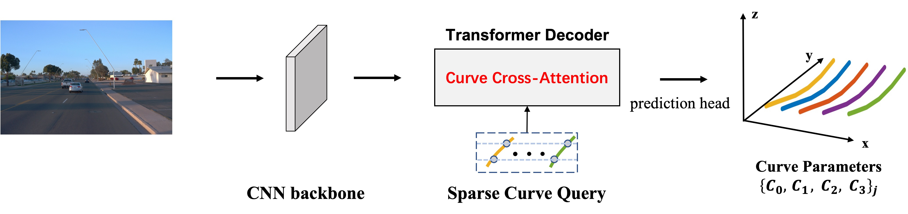

|
Erkang Cheng is a computer scientist working on computer vision and autonomous driving. He received Ph.D. from Temple University, USA, in 2014 supervised by Prof. Haibin Ling. His research interests include computer vision, deep learning, autonomous driving, and medical image analysis. His work has been published in several top venues including CVPR, ICCV, MICCAI, ICRA and IROS. His current focus is to solve autonomous perception problems and fundamental research in medical image analysis. Email: twokang dot cheng AT gmail dot com. Google Scholar |

|
News |
|  | CurveFormer: 3D Lane Detection by Curve Propagation with Curve Queries and Attention Yifeng Bai^, Zhirong Chen^, Zhangjie Fu, Lang Peng, Pengpeng Liang, Erkang Cheng* arxiv, 2022 [paper] [video] |
| BEVSegFormer: Bird's Eye View Semantic Segmentation From Arbitrary Camera Rigs Lang Peng, Zhirong Chen, Zhangjie Fu, Pengpeng Liang, Erkang Cheng* WACV, 2023 (accepted) [paper] [video] |
|
| Traffic Context Aware Data Augmentation for Rare Object Detection in Autonomous Driving Naifan Li, Fan Song, Ying Zhang, Pengpeng Liang, Erkang Cheng* ICRA, 2022 [paper] [dataset] |
|
 |
Pseudo Segmentation for Semantic Information-Aware Stereo Matching Shengyou Hua, Zhiyong Sun, Bo Song, Pengpeng Liang, Erkang Cheng IEEE Signal Processing Letters, 2022 |
 |
Accurate Preoperative Path Planning with Coarse-to-refine Segmentation for Image Guided Deep Brain Stimulation Bin Cai, Chi Xiong, Zhiyong Sun, Pengpeng Liang, Kaifeng Wang, Yuhao Guo, Chaoshi Niu, Bo Song, Erkang Cheng*, Xiongbiao Luo Biomedical Signal Processing and Control, 2022 |
 |
Orthographic Pooling: Learned Maximum Intensity Projection for Vertebrae Labelling Bin Cai, Yuhao Guo, Pengpeng Liang, Kaifeng Wang, Zhiyong Sun, Chi Xiong, Bo Song, Chaoshi Niu, Erkang Cheng* EMBC, 2022 |
 |
Efficient Network with Ghost Tied Block for Heart Segmentation Yuhao Guo, Bin Cai, Pengpeng Liang, Kaifeng Wang, Zhiyong Sun, Chi Xiong, Bo Song, Chaoshi Niu, Erkang Cheng* SPIE Medical Imaging, 2022 |
 |
Coarse-to-fine Semantic Localization with HD Map for Autonomous Driving in Structural Scenes Chengcheng Guo, Minjie Lin, Heyang Guo, Pengpeng Liang, Erkang Cheng* IROS, 2021 [paper] [video] |
 |
Learning Local Descriptors with Multi-level Feature Aggregation and Spatial Context Pyramid Pengpeng Liang, Haoxuanye Ji, Erkang Cheng, Yumei Chai, Liming Wang, Haibin Ling Neurocomputing, 2021 |
 |
Joint Spinal Centerline Extraction and Curvature Estimation with Row-Wise Classification and Curve Graph Network Long Huo, Bin Cai, Pengpeng Liang, Zhiyong Sun, Chi Xiong, Chaoshi Niu, Bo Song, Erkang Cheng* MICCAI, 2021 |
 |
Ghost-light-3dnet: Efficient Network for Heart Segmentation Bin Cai^, Erkang Cheng^, Pengpeng Liang, Chi Xiong, Zhiyong Sun, Qiang Zhang, Bo Song ISBI, 2021 |